Marker
A marker is an overlay indicating a single location on the map. It is the most frequently used element on the map. It displays an icon and caption at the specified coordinates on the map. The icon and caption of a marker move along with the map, but maintain their form even if the map is zoomed in or out. A marker can also receive touch events, consume them or propagate them to the map.
Add and remove markers
An NMFMarker can be created just like a general class object. Create an object, set coordinates in the position property, and set a map object in the mapView property to display a marker. Note that you should set the position property before setting the mapView property; otherwise a marker is not added to the map.
The following code example creates a marker object and adds it to the map.
let marker = NMFMarker()
marker.position = NMGLatLng(lat: 37.5670135, lng: 126.9783740)
marker.mapView = mapView
Swift
let marker = NMFMarker()
marker.position = NMGLatLng(lat: 37.5670135, lng: 126.9783740)
marker.mapView = mapView
Objective-C
NMFMarker *marker = [NMFMarker new];
marker.position = NMGLatLngMake(37.5670135, 126.9783740);
marker.mapView = self.mapView;
The following figure shows a marker added to the map.

Set the mapView property to nil, and the marker disappears from the map.
The following code example removes a marker from the map.
marker.mapView = nil
Swift
marker.mapView = nil
Objective-C
marker.mapView = nil;
Coordinates
The position property specifies coordinates. Coordinates are required; a marker with no coordinates specified is not added to the map. If you change the coordinates of the marker that has already been added to the map, the marker moves to the position of the changed coordinates.
The following code example specifies a marker’s coordinates.
marker.position = NMGLatLng(lat: 37.5670135, lng: 126.9783740)
Swift
marker.position = NMGLatLng(lat: 37.5670135, lng: 126.9783740)
Objective-C
marker.position = NMGLatLngMake(37.5670135, 126.9783740);
Icon
An icon is an important element that visually indicates a marker. Indicating a single location on the map like a pin, it cannot be omitted. You can specify the image and size of an icon.
Image
The iconImage property specifies an icon. Before specifying an icon, you should create an NMFOverlayImage object. NMFOverlayImage is a class that represents bitmap images that can be used by overlays. Using the factory methods defined in this class, you can create an instance from assets, UIImage and views.
The following code example sets an icon for a marker.
marker.iconImage = NMFOverlayImage(name: "marker_icon")
Swift
marker.iconImage = NMFOverlayImage(name: "marker_icon")
Objective-C
marker.iconImage = [NMFOverlayImage overlayImageWithName:@"marker_icon"];
The following figure shows a marker with an icon specified.
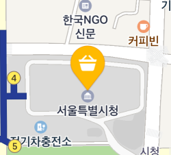
The NAVER Maps SDK provides various built-in marker icons. For available icons, refer to the constants starting with NMF_MARKER_IMAGE in Other Constants.
Add colors
The iconTintColor property adds a color to an icon image. The color you specified is additive-mixed with the color of an icon image. Note that the alpha of the additive color is ignored and only the alpha of the icon image color is used.
To make the mixed color vibrant, it is better to use a grayscale image icon. The NAVER Maps SDK provides built-in MarkerIcons.BLACK that is appropriate for additive mixing.
The following code example specifies a marker icon as NMF_MARKER_IMAGE_BLACK and adds red to the icon.
marker.iconImage = NMF_MARKER_IMAGE_BLACK
marker.iconTintColor = UIColor.red
Swift
marker.iconImage = NMF_MARKER_IMAGE_BLACK
marker.iconTintColor = UIColor.red
Objective-C
marker.iconImage = NMF_MARKER_IMAGE_BLACK;
marker.iconTintColor = [UIColor redColor];
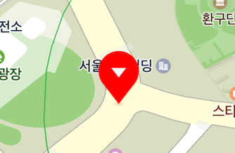
Size
The width and the height properties specify the size of an icon.
The following code example sets a marker’s width and height to 25 px and 40 px, respectively.
marker.width = 25
marker.height = 40
Swift
marker.width = 25
marker.height = 40
Objective-C
marker.width = 25;
marker.height = 40;
The following figure shows a marker icon with the specified size.
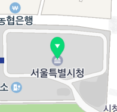
If you set width or height to NMF_MARKER_SIZE_AUTO, the default value, the width or height of the icon is adjusted to the size of the image.
The following code example specifies the icon size of a marker to NMF_MARKER_SIZE_AUTO.
marker.width = NMF_MARKER_SIZE_AUTO
marker.height = NMF_MARKER_SIZE_AUTO
Swift
marker.width = NMF_MARKER_SIZE_AUTO
marker.height = NMF_MARKER_SIZE_AUTO
Objective-C
marker.width = NMF_MARKER_SIZE_AUTO;
marker.height = NMF_MARKER_SIZE_AUTO;
Anchor
Using the anchor property, you can make the position indicated by an image match the position where a marker is placed. Anchor is the point on the icon image that will be placed at the coordinates of the marker. An anchor point is a proportion value where the top left is (0, 0), and the bottom right is (1, 1).
This property is useful when the default marker image is not used. For example, if you specify an image that has a tail at the bottom right as a marker’s icon as shown below, the image points to the bottom right but the marker is anchored to the map based on the point at the bottom of the middle of the image, which makes a gap between the coordinates of the image and those of the marker.
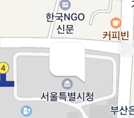
In this case, set the anchor property to (1, 1), which means the bottom right, to clear the coordinates difference between the image and the marker.
The following code example specifies the anchor of a marker to the bottom right.
marker.anchor = CGPoint(x: 1, y: 1)
Swift
marker.anchor = CGPoint(x: 1, y: 1)
Objective-C
marker.anchor = CGPointMake(1, 1);
The following figure shows the anchor of the marker specified to the bottom right.

Rotation
The angle property rotates an icon. It becomes bigger clockwise, based on the upper side of the screen. That is, the direction is up for 0 degree, right for 90 degrees, and down for 180 degrees.
The following code example rotates a marker’s icon 90 degrees clockwise.
marker.angle = 90
Swift
marker.angle = 90
Objective-C
marker.angle = 90;
The figure below shows the result of rotating the marker icon 90 degrees.
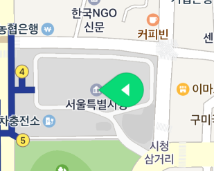
An image is rotated around the anchor point. Therefore, you do not need to change the anchor even if the image is rotated.
The following code example rotates a marker’s icon 90 degrees clockwise around the bottom right point.
marker.anchor = CGPoint(x: 1, y: 1)
marker.angle = 90
Swift
marker.anchor = CGPoint(x: 1, y: 1)
marker.angle = 90
Objective-C
marker.anchor = CGPointMake(1, 1);
marker.angle = 90;
The following figure shows a marker’s icon rotated 90 degrees clockwise around the bottom right point.
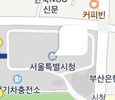
Flat
A marker basically maintains its shape even if users tilt or rotate the map.
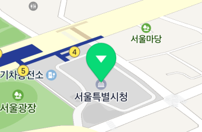
However, if the flat property is set to YES, the icon becomes flat. Flat icons rotate and tilt as the camera rotates and tilts.
The following code example sets a marker icon to be flat.
marker.isFlat = true
Swift
marker.isFlat = true
Objective-C
marker.flat = YES;
The following figure shows a flattened marker icon.
Specify the angle property for a flat icon, then the icon is rotated on the map. The direction is north for 0 degree, east for 90 degrees, and south for 180 degrees.
The following code example sets a marker’s icon to be flat and rotates it 90 degrees clockwise from north.
marker.isFlat = true
marker.angle = 90
Swift
marker.isFlat = true
marker.angle = 90
Objective-C
marker.flat = YES;
marker.angle = 90;
The following figure shows a marker’s icon rotated 90 degrees clockwise from north.
Perspective
Since markers are not displayed in perspective by default, there is no difference in size between the distant marker and the closer marker even if the map is tilted.
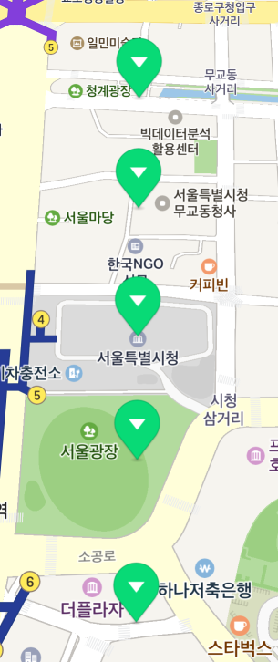
Set the iconPerspectiveEnabled property to YES to apply perspective to icons. Icons displayed in perspective get bigger as they appear closer to the bottom of the screen, and smaller as farther.
The following code example applies perspective to a marker’s icon.
marker.iconPerspectiveEnabled = true
Swift
marker.iconPerspectiveEnabled = true
Objective-C
marker.iconPerspectiveEnabled = YES;
The following figure shows marker icons in perspective.
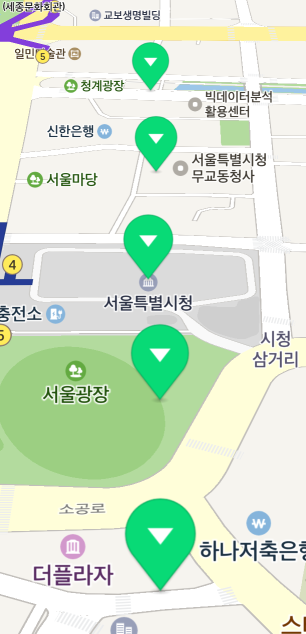
Caption
A caption is text displayed with a marker image. It is used to show text information of the position which a marker points to.
Text
The captionText property specifies text to be displayed as a caption. If the property is set to an empty string or nil, a caption does not appear.
The following code example specifies the caption text of a marker a "Hello".
marker.captionText = "Hello"
Swift
marker.captionText = "Hello"
Objective-C
marker.captionText = @"Hello";
The following figure shows a marker with the caption text specified as “Hello.”
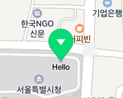
Line break of caption text
The captionRequestedWidth property limits the width of caption text. If a line of caption text is too long to fit the specified width, it automatically wraps. Note that if text is written without spaces, it may not wrap. If the property is set to 0, caption text does not wrap.
The following code example limits a marker’s caption width to 100 px.
marker.captionRequestedWidth = 100
marker.captionText = "Very very very very very very very very very long caption"
Swift
marker.captionRequestedWidth = 100
marker.captionText = "Very very very very very very very very very long caption"
Objective-C
marker.captionRequestedWidth = 100;
marker.captionText = @"Very very very very very very very very very long caption"
The following figure shows a marker’s caption with the limited width.
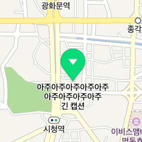
Alignment
A cation is placed beneath an icon by default, but you can change the alignment with the captionAligns property. There are 9 available options including top, bottom, left, right, diagonal directions and center, which are defined in the NMFAlignType object.
The following code example places a marker’s caption above an icon.
marker.captionAligns = [NMFAlignType.top]
Swift
marker.captionAligns = [NMFAlignType.top]
Objective-C
marker.captionAligns = @[NMFAlignType.top];
The following figure shows a caption placed above the icon.
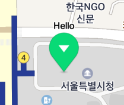
The captionOffset property specifies the distance between the icon and the caption. Note that the captionOffset will be ignored if the captionAlign property is NMFAlignCenter.
The following code example specifies the distance between a marker’s icon and caption to 15 px.
marker.captionOffset = 15
Swift
marker.captionOffset = 15
Objective-C
marker.captionOffset = 15;
The following figure shows the distance between the icon and the caption set to 15 px.
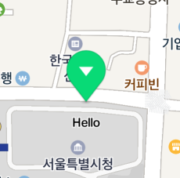
Fill color
The captionColor property specifies a caption’s color, the captionHaloColor property specifies a caption’s outline color.
The following code example sets a marker’s caption color to blue, outline to light green.
marker.captionColor = UIColor.blue
marker.captionHaloColor = UIColor(red: 200.0/255.0, green: 1, blue: 200.0/255.0, alpha: 1)
Swift
marker.captionColor = UIColor.blue
marker.captionHaloColor = UIColor(red: 200.0/255.0, green: 1, blue: 200.0/255.0, alpha: 1)
Objective-C
marker.captionColor = UIColor.blueColor;
marker.captionHaloColor = [UIColor colorWithRed:200.0/255.0 green:1 blue:200.0/255.0 alpha:1];
The following figure shows the caption color specified above.
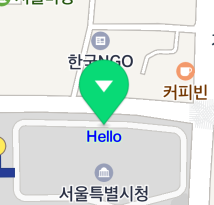
Size
The captionTextSize property specifies the size of caption text.
The following code example sets the size of a marker’s caption text to 16 pt.
marker.captionTextSize = 16
Swift
marker.captionTextSize = 16
Objective-C
marker.captionTextSize = 16;
The following figure shows the caption text size set to 16 pt.
Sub caption
A sub caption is another caption that can be added to a main cation. Allowing you to specify its text, color and size, separate from the main caption’s, sub captions are useful to provide addition information. Note that the alignment and offset of a sub caption cannot be specified; it is unconditionally placed beneath the main caption.
The names of the properties of a sub caption are mostly the same as those of the main caption, except that they begin with sub, such as subCaptionText, subCaptionColor, subCaptionHaloColor, subCaptionTextSize, and subCaptionRequestedWidth.
The following code example adds a sub caption to a marker.
marker.subCaptionText = "Sub caption\n(sub caption)"
marker.subCaptionColor = UIColor.blue
marker.subCaptionHaloColor = UIColor(red: 200.0/255.0, green: 1, blue: 200.0/255.0, alpha: 1)
marker.subCaptionTextSize(10);
Swift
marker.subCaptionText = "Sub caption\n(sub caption)"
marker.subCaptionColor = UIColor.blue
marker.subCaptionHaloColor = UIColor(red: 200.0/255.0, green: 1, blue: 200.0/255.0, alpha: 1)
marker.subCaptionTextSize(10);
Objective-C
marker.subCaptionText = @"Sub caption\n(sub caption)";
marker.SubCaptionColor = UIColor.blueColor;
marker.subCaptionHaloColor = [UIColor colorWithRed:200.0/255.0 green:1 blue:200.0/255.0 alpha:1];
marker.subCaptionTextSize(10);
The following figure shows a sub caption added to the marker.
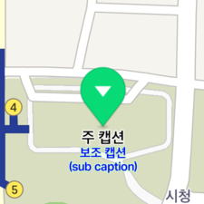
Opacity
The alpha property specifies opacity of a marker. Opacity applies to both an icon and a caption. The value ranges from 0 to 1, where 0 is fully transparent and 1 is fully opaque. Even though the alpha property is 0, the subjects are still considered to be on the screen, unlike the case where the visible is false. Therefore, they can be overlapped or can receive events.
The following code example sets a marker to be semitransparent.
marker.alpha = 0.5
Swift
marker.alpha = 0.5
Objective-C
marker.alpha = 0.5f;
The following figure shows the marker set to be semitransparent.

Overlap
As a marker is an overlay indicating a location on the map, multiple markers can be overlapped when the map is zoomed out. Overlapping markers can make you hardly see the locations they’re pointing to. In this case, you can set a specific marker to have priority over others, or hide captions or symbols of overlapped markers, for enhanced focus on information and reduced complexity.
Z index
When multiple markers are overlapped, markers closer to the bottom of the screen are basically displayed on top of those more distant than them. That is, markers displayed on top of others change as the camera is rotated, as shown in the figure below.
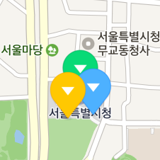 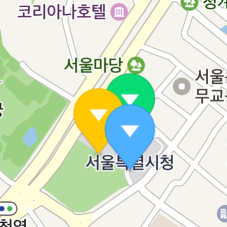 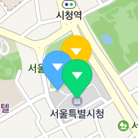
The globalZIndex and zIndex properties specify a z index which defines the stack order of a marker. A marker with a high z index is displayed on top of those with lower z indexes.
The following code example specifies the stacking order of three markers as yellow -> green -> blue.
yellowMarker.zIndex = 100
greenMarker.zIndex = 0
blueMarker.zIndex = -10
Swift
yellowMarker.zIndex = 100
greenMarker.zIndex = 0
blueMarker.zIndex = -10
Objective-C
yellowMarker.zIndex = 100;
greenMarker.zIndex = 0;
blueMarker.zIndex = -10;
Although the yellow marker is farther from the bottom of the screen, it is displayed on top of others because its z index is higher than others’.
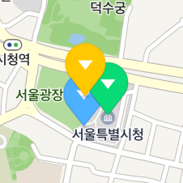
Overlapping of markers and symbols
Overlapping of markers and symbols makes the map more complex and less visible.
Set the isHideCollidedSymbols property to YES to hide symbols overlapped with markers.
The following code example sets symbols overlapped with markers to be hidden from the map.
marker.isHideCollidedSymbols = true
Swift
marker.isHideCollidedSymbols = true
Objective-C
marker.isHideCollidedSymbols = YES;
As in the figure below, symbols overlapped with markers are not displayed on the map.
Overlapping of markers
As you can see in the figure below, a marker can be overlapped with other markers as well as symbols, making the map hard to read.
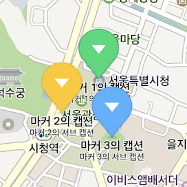
Set the isHideCollidedMarkers property to YES to hide overlapped markers. Then, only markers that are not overlapped are displayed on the map. If two markers are overlapped, the one with a higher z index has priority over the other.
The following code example sets markers overlapped with other markers to be hidden from the map.
marker.isHideCollidedMarkers = true
Swift
marker.isHideCollidedMarkers = true
Objective-C
marker.isHideCollidedMarkers = YES;
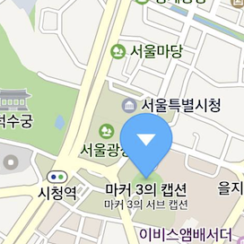
You can also set the isHideCollidedCaptions property to YES to hide the caption of a marker overlapped with other markers. Then, only captions of markers that are not overlapped are displayed on the map. Note that if isHideCollidedMarkers is set to YES, isHideCollidedCaptions is ignored.
The following code example sets the caption of a marker overlapped with other markers to be hidden from the map.
marker.isHideCollidedCaptions = true
Swift
marker.isHideCollidedCaptions = true
Objective-C
marker.isHideCollidedCaptions = YES;
Force markers to appear
Set the isForceShowIcon property to YES to force a marker icon to appear even if it is overlapped with other markers for which isHideCollidedMarkers is set to YES. The isForceShowIcon property forces important markers to appear while hiding overlapping markers. Set the zIndex of an important marker to be higher and set its isHideCollidedMarkers and isForceShowIcon to true, while lower the zIndex of a less important marker and set its isHideCollidedMarkers to true.
The following code example hides overlapped markers but forces an important marker to appear.
var importantMarkers: [NMFMarker] = [...]// Important markers
var normalMarkers: [NMFMarker] = [...]// Less important markers
for marker in importantMarkers {
marker.zIndex = 1
marker.isHideCollidedMarkers = true
marker.isForceShowIcon = true
}
for marker in normalMarkers {
marker.zIndex = 0
marker.isHideCollidedMarkers = true
marker.isForceShowIcon = false
}
Swift
var importantMarkers: [NMFMarker] = [...]// Important markers
var normalMarkers: [NMFMarker] = [...]// Less important markers
for marker in importantMarkers {
marker.zIndex = 1
marker.isHideCollidedMarkers = true
marker.isForceShowIcon = true
}
for marker in normalMarkers {
marker.zIndex = 0
marker.isHideCollidedMarkers = true
marker.isForceShowIcon = false
}
Objective-C
NSArray<NMFMarker *> *importantMarkers = [NSArray ...]; // Important markers
NSArray<NMFMarker *> *normalMarkers = [NSArray ...];// Less important markers
for (NMFMarker *marker in importantMarkers) {
marker.zIndex = 1;
marker.isHideCollidedMarkers = YES;
marker.isForceShowIcon = YES;
}
for (NMFMarker *marker in normalMarkers) {
marker.zIndex = 0;
marker.isHideCollidedMarkers = YES;
marker.isForceShowIcon = NO;
}